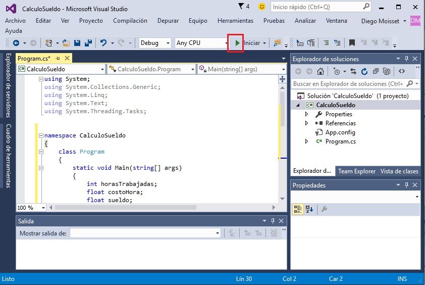
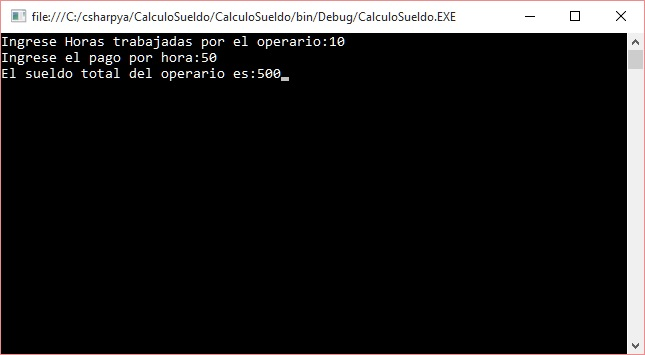
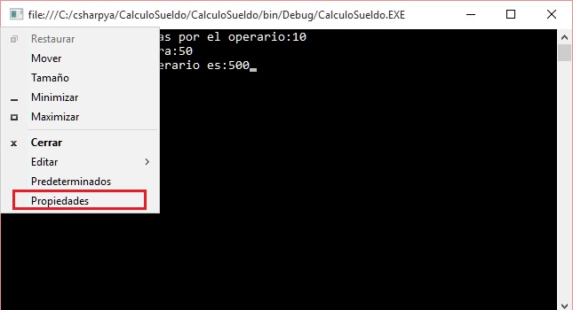
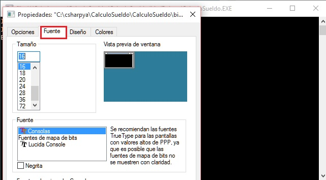
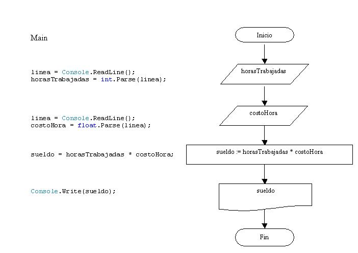

Ahora debemos codificar el diagrama de flujo utilizando las instrucciones del lenguaje C#. Como hemos visto el entorno de programación del Visual C# nos creó un esqueleto básico sobre el cual continuaremos el programa:
using System;
using System.Collections.Generic;
using System.Linq;
using System.Text;
using System.Threading.Tasks;
namespace CalculoSueldo
{
class Program
{
static void Main(string[] args)
{
}
}
}
A medida que avancemos en el curso veremos que significa una clase y namespace, cual es el objetivo del using etc. por el momento nos centraremos donde codificaremos nuestros diagramas de flujo.
La codificación del diagrama de flujo la haremos dentro de la función Main (la función Main es la primera que se ejecuta al iniciarse un programa)
El programa completo para el calculo del sueldo de un operario conociendo la cantidad de horas trabajadas y el costo por hora es:
using System;
using System.Collections.Generic;
using System.Linq;
using System.Text;
using System.Threading.Tasks;
namespace CalculoSueldo
{
class Program
{
static void Main(string[] args)
{
int horasTrabajadas;
float costoHora;
float sueldo;
string linea;
Console.Write("Ingrese Horas trabajadas por el operario:");
linea = Console.ReadLine();
horasTrabajadas = int.Parse(linea);
Console.Write("Ingrese el pago por hora:");
linea = Console.ReadLine();
costoHora = float.Parse(linea);
sueldo = horasTrabajadas * costoHora;
Console.Write("El sueldo total del operario es:");
Console.Write(sueldo);
Console.ReadKey();
}
}
}
Para probar el funcionamiento del programa debemos presionar el ícono con un triángulo verde (o la tecla especial F5 o desde el menú elegir la opción "Depurar" -> "Iniciar depuración"):

La ejecución del programa permite ingresar la cantidad de horas trabajadas por un operario y su pago por hora, mostrando seguidamente el sueldo que se debe pagar, un ejemplo de la ejecución de este programa es :
Si el texto de la ventana donde se ejecuta el programa es muy pequeña podemos modificar su tamaño de fuente desde el menú que tiene a la izquierda:
Y seleccionar un tamaño mayor:
Conceptos que deben quedar claros:
-
Por el momento haremos todo el algoritmo dentro de la función Main. Es decir el resto siempre lo crea el entorno del Visual C#.
-
Si observamos el diagrama de flujos vemos que debemos definir tres variables: (horasTrabajadas, costoHora,sueldo), aquí es donde debemos definir que tipos de datos se almacenarán en las mismas. La cantidad de horas normalmente será un valor entero (ej. 100 - 150 - 230 etc.), pero el costo de la hora es muy común que sea un valor real (ej. 5.35 - 7.50 etc.) y como el sueldo resulta de multiplicar las horas trabajadas por el costo por hora el mismo deberá ser real.
La definición de las variables la hacemos en la Main:
int horasTrabajadas; float costoHora; float sueldo;Utilizamos la palabra clave int para definir variables enteras (en C# las palabras claves deben ir obligatoriamente en minúsculas, sino se produce un error sintáctico) Luego de la palabra clave debemos indicar el nombre de la variable, por ejemplo: horasTrabajadas (se propone que el nombre de la variable comience con minúscula y en caso de estar constituida por dos palabras o más palabras deben ir en mayúsculas el primer caracter (un nombre de variable no puede tener espacios en blanco, empezar con un número, ni tampoco utilizar caracteres especiales)
Debemos buscar siempre nombres de variables que nos indiquen que almacenan (no es conveniente llamar a nombres de variables con letras individuales) -
Para mostrar mensajes en la pantalla utilizamos el objeto "Console":
Console.Write("Ingrese Horas trabajadas por el operario:");Con esta sintaxis todo lo que se encuentra contenido entre comillas aparecerá exactamente en la ventana de la "Console".
Si disponemos una variable:
Console.Write(sueldo);Aparecerá el contenido de la variable. Es decir el valor almacenado en la variable sueldo y no el mensaje "sueldo".
-
Para hacer la entrada de datos por teclado en C# se complica. Debemos definir una variable de tipo string que la llamaremos linea:
string linea;Luego cada vez que necesitemos ingresar por teclado un conjunto de caracteres utilizaremos la función ReadLine del objeto Console con la siguiente sintaxis:
linea = Console.ReadLine();Un segundo paso es copiar el contenido de la variable linea en una variable de tipo int:
horasTrabajadas = int.Parse(linea);O una variable de tipo float:
costoHora = float.Parse(linea);La variable linea almacena temporalmente los datos que ingresa el operador del programa, para luego copiarse a la variable respectiva (como vemos si queremos convertir un string a tipo de dato entero utilizamos la función Parse del objeto int (int.Parse))
Las operaciones que indicamos en el diagrama de flujo mediante la figura rectángulo la codificamos tal cual:
sueldo = horasTrabajadas * costoHora;
Podemos ver una relación entre las instrucciones que debemos utilizar para cada símbolo del diagrama de flujo:

En el diagrama de flujo no indicamos la definición de variables:
int horasTrabajadas;
float costoHora;
float sueldo;
string linea;
No representamos con símbolos los mensajes a mostrar previo a la carga de datos por teclado:
Console.Write("Ingrese Horas trabajadas por el operario:");
Como hemos visto hasta ahora hay muchas partes de nuestro código que no entendemos pero son indispensables para la implementación de nuestros programas, a medida que avancemos con el curso muchos de estos conceptos se irán aclarando.
Recordar que cuando terminamos con un programa debemos cerrarlo antes de crear uno nuevo mediante Archivo -> Cerrar solución: